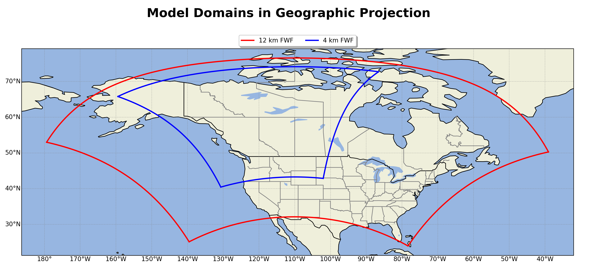

Datasets¶
The Datasets are divided up by their model domain
Model Domains¶
The FWF model resolves the FWI System/ FBP System in the D02 (12 km) and D03 (4 km) at 55 hour forecast horizon.

Description¶
For each domain there are two .nc (netcdf) files generated, four total datasets each day.
Domain: d02 (12 km)
fwf-hourly-d02-YYYYMMDDHH.ncFile Size: ~ 780M
File Dimensions: (time: 55, south_north: 417, west_east: 627)
fwf-daily-d02-YYYYMMDDHH.ncFile Size: ~ 16M
File Dimensions: (time: 2, south_north: 417, west_east: 627)
Domain: d03 (4 km)
fwf-hourly-d03-YYYYMMDDHH.ncFile Size: ~ 1.7G
File Dimensions: (time: 55, south_north: 840, west_east: 642)
fwf-daily-d03-YYYYMMDDHH.ncFile Size: ~ 30M
File Dimensions: (time: 2, south_north: 840, west_east: 642)
Dataset Variables¶
Regardless of Domain, each dataset hourly/daily contain the following variables.
Hourly Dataset |
Daily Dataset |
|---|---|
Time: Hourly UTC |
Time: Noon Local for that Day |
XLAT: Degrees Latitude |
XLAT: Degrees Latitude |
XLON: Degrees Longitude |
XLON: Degrees Longitude |
F: Fine Fuel Moisture Code |
P: Duff Moisture Code |
m_o: Fine Fuel Moisture Content |
D: Drought Moisture Code |
R: Initial Spread Index |
U: Build Up Index |
S: Fire Weather Index |
T: 2 meter Temperature C |
DSR: Daily Severity Rating |
TD: 2 meter Dew Point Temperature C |
FMC: Foliar Moisture Content % |
H: 2 meter Relative Humdity % |
SFC: Surface Fuel Consumption kg m^{-2} |
W: 10 meter Wind Speed km/h |
TFC: Total Fuel Consumption kg m^{-2} |
WD: 10 meter Wind Direction deg |
ROS: Rate of Spread m min^{-1} |
r_o: Total Accumulated Precipitation mm |
CFB: Crown Fraction Burned % |
r_o_tomorrow: Carry Over Precipitation mm |
HFI: Head Fire Intensity kW m^{-1} |
SNOWC: Flag Inidicating Snow |
T: 2 meter Temperature C |
|
TD: 2 meter Dew Point Temperature C |
|
H: 2 meter Relative Humdity % |
|
W: 10 meter Wind Speed km/h |
|
WD: 10 meter Wind Direction deg |
|
U10: U Component of Wind at 10 meter m/s |
|
V10: V Component of Wind at 10 meter m/s |
|
r_o: Total Accumulated Precipitation mm |
|
r_o_hourly: Hourly Accumulated Precipitation mm |
|
SNW: Total Accumulated Snow cm |
|
SNOWH: Physical Snow Depth m |
|
SNOWC: Flag Indicating Snow |
Working with¶
Suggest using xarray to open and work with data.
An example of how to open and view
import context
import numpy as np
import xarray as xr
from context import data_dir, fwf_dir
forecast_date = '2021051006' ## "YYYYMMDDHH"
domain = 'd02' ## or 'd03'
name = 'hourly' ## or 'daily'
## file directory
filein = str(fwf_dir) + f"/fwf-{name}-{domain}-{forecast_date}.nc"
## open dataset
ds = xr.open_dataset(filein)
## chunk data to dask.arrays
ds = ds.chunk(chunks="auto")
ds = ds.unify_chunks()
# NOTE this is not needed. Arrays will be either numpy float32 or objects
## Example: look at variable F (Fine Fuels Moisture Code)
print(ds.F)
******************************
context imported. Front of path:
/Users/rodell/fwf
/Users/rodell/fwf/fwf-docs/source
******************************
through /Users/rodell/fwf/fwf-docs/source/context.py -- pha
<xarray.DataArray 'F' (time: 55, south_north: 417, west_east: 627)>
dask.array<xarray-F, shape=(55, 417, 627), dtype=float32, chunksize=(55, 417, 627), chunktype=numpy.ndarray>
Coordinates:
XLONG (south_north, west_east) float32 dask.array<chunksize=(417, 627), meta=np.ndarray>
XLAT (south_north, west_east) float32 dask.array<chunksize=(417, 627), meta=np.ndarray>
XTIME (time) float32 dask.array<chunksize=(55,), meta=np.ndarray>
Time (time) datetime64[ns] dask.array<chunksize=(55,), meta=np.ndarray>
Dimensions without coordinates: time, south_north, west_east
Attributes:
FieldType: 104
MemoryOrder: XY
description: FINE FUEL MOISTURE CODE
projection: PolarStereographic(stand_lon=-110.0, moad_cen_lat=53.999992...
stagger:
How to search the FWF data set by locations¶
import context
import pickle
import numpy as np
import pandas as pd
import xarray as xr
from sklearn.neighbors import KDTree
from pathlib import Path
from context import data_dir, fwf_dir
from datetime import datetime, date, timedelta
Define dataset information¶
Define forecast date, domain and set paths to dataset
forecast_date = '2021051006' ## "YYYYMMDDHH"
domain = 'd02' ## or 'd03'
name = 'hourly' ## or 'daily'
filein = str(fwf_dir) + f"/fwf-{name}-{domain}-{forecast_date}.nc"
Open forecast dataset and print
ds = xr.open_dataset(filein)
## strip some attributes from the netcdf for the sake of printing
ds.attrs = {'TITLE': 'FWF MODEL USING OUTPUT FROM WRF V4.2.1 MODEL',
'WEST-EAST_GRID_DIMENSION': '628',
'SOUTH-NORTH_GRID_DIMENSION': '418',
'DX': '12000.0',
'DY': '12000.0'}
print(ds)
<xarray.Dataset>
Dimensions: (south_north: 417, time: 55, west_east: 627)
Coordinates:
XLONG (south_north, west_east) float32 ...
XLAT (south_north, west_east) float32 ...
XTIME (time) float32 ...
Time (time) datetime64[ns] ...
Dimensions without coordinates: south_north, time, west_east
Data variables:
F (time, south_north, west_east) float32 ...
m_o (time, south_north, west_east) float32 ...
T (time, south_north, west_east) float32 ...
TD (time, south_north, west_east) float32 ...
H (time, south_north, west_east) float32 ...
W (time, south_north, west_east) float32 ...
WD (time, south_north, west_east) float32 ...
r_o (time, south_north, west_east) float32 ...
SNW (time, south_north, west_east) float32 ...
SNOWC (time, south_north, west_east) float32 ...
SNOWH (time, south_north, west_east) float32 ...
U10 (time, south_north, west_east) float32 ...
V10 (time, south_north, west_east) float32 ...
r_o_hourly (time, south_north, west_east) float32 ...
R (time, south_north, west_east) float32 ...
S (time, south_north, west_east) float32 ...
DSR (time, south_north, west_east) float32 ...
FMC (south_north, west_east) float32 ...
SFC (time, south_north, west_east) float32 ...
ISI (time, south_north, west_east) float32 ...
ROS (time, south_north, west_east) float32 ...
CFB (time, south_north, west_east) float32 ...
TFC (time, south_north, west_east) float32 ...
HFI (time, south_north, west_east) float32 ...
Attributes:
TITLE: FWF MODEL USING OUTPUT FROM WRF V4.2.1 MODEL
WEST-EAST_GRID_DIMENSION: 628
SOUTH-NORTH_GRID_DIMENSION: 418
DX: 12000.0
DY: 12000.0
Load a data set of weather sation locations and look at the first four rows as an example
df = pd.read_csv(str(data_dir) + "/nrcan-wxstations.csv", sep=",", usecols = ['wmo', 'lat', 'lon'])
print(df.head())
wmo lat lon
0 70489 53.900 -166.533
1 70395 55.350 -131.700
2 70387 56.483 -132.367
3 70386 56.817 -132.967
4 70381 58.367 -134.583
Set up to build a kdtree¶
First, set path to store kdtree and make directory if it doesn’t exist
kdtree_dir = Path(str(data_dir) + "/kdtree/")
kdtree_dir.mkdir(parents=True, exist_ok=True)
Now take gridded lats and long and convert to np arrays and check its shape
XLAT, XLONG = ds.XLAT.values, ds.XLONG.values
shape = XLAT.shape
print(shape)
(417, 627)
Build a kdtree and save¶
try:
## try and open kdtree for domain
fwf_tree, fwf_locs = pickle.load(open(str(kdtree_dir) + f'fwf_{domain}_tree.p', "rb"))
print('Found FWF Tree')
except:
## build a kd-tree for fwf domain if not found
print("Could not find FWF KDTree building....")
## create dataframe with columns of all lat/long in the domian...rows are cord pairs
fwf_locs = pd.DataFrame({"XLAT": XLAT.ravel(), "XLONG": XLONG.ravel()})
## build kdtree
fwf_tree = KDTree(fwf_locs)
## save tree
pickle.dump([fwf_tree, fwf_locs], open(str(kdtree_dir) + f'fwf_{domain}_tree.p', "wb"))
print("FWF KDTree built")
Found FWF Tree
Search the data¶
With a built kdtree we can query the tree to find the nearest neighbor model grid to our locations of interest.
First, define empty list to append index of weather station locations
south_north, west_east, wmo = [], [], []
Now lets loop each weather station in dataframe
for loc in df.itertuples(index=True, name='Pandas'):
## arange wx station lat and long in a formate to query the kdtree
single_loc = np.array([loc.lat, loc.lon]).reshape(1, -1)
## query the kdtree retuning the distacne of nearest neighbor and the index on the raveled grid
fwf_dist, fwf_ind = fwf_tree.query(single_loc, k=1)
## set condition to pass on stations outside model domian
if fwf_dist > 0.1:
pass
else:
## if condition passed reformate 1D index to 2D indexes
fwf_2D_ind = np.unravel_index(int(fwf_ind), shape)
## append the indexes to lists
wmo.append(loc.wmo)
south_north.append(fwf_2D_ind[0])
west_east.append(fwf_2D_ind[1])
Index an entire dataset¶
Now the magic of xarray. Convert lists of indexes to dataarrays with dimension wmo (weather staton). This allows you to index an entire dataset!
south_north = xr.DataArray(np.array(south_north), dims= 'wmo', coords= dict(wmo = wmo))
west_east = xr.DataArray(np.array(west_east), dims= 'wmo', coords= dict(wmo = wmo))
Index the entire dataset at the locations of interest leaving dimension time with new dimension wx stations
ds_loc = ds.sel(south_north = south_north, west_east = west_east)
Print to see new time series dataset at every weather station location
print(ds_loc)
<xarray.Dataset>
Dimensions: (time: 55, wmo: 1335)
Coordinates:
XLONG (wmo) float32 -166.5 -131.7 -132.3 ... -76.06 -71.51 -69.85
XLAT (wmo) float32 53.95 55.29 56.45 56.77 ... 44.02 42.72 44.35
XTIME (time) float32 ...
Time (time) datetime64[ns] ...
* wmo (wmo) int64 70489 70395 70387 70386 ... 721847 721839 721829
Dimensions without coordinates: time
Data variables:
F (time, wmo) float32 ...
m_o (time, wmo) float32 ...
T (time, wmo) float32 ...
TD (time, wmo) float32 ...
H (time, wmo) float32 ...
W (time, wmo) float32 ...
WD (time, wmo) float32 ...
r_o (time, wmo) float32 ...
SNW (time, wmo) float32 ...
SNOWC (time, wmo) float32 ...
SNOWH (time, wmo) float32 ...
U10 (time, wmo) float32 ...
V10 (time, wmo) float32 ...
r_o_hourly (time, wmo) float32 ...
R (time, wmo) float32 ...
S (time, wmo) float32 ...
DSR (time, wmo) float32 ...
FMC (wmo) float32 ...
SFC (time, wmo) float32 ...
ISI (time, wmo) float32 ...
ROS (time, wmo) float32 ...
CFB (time, wmo) float32 ...
TFC (time, wmo) float32 ...
HFI (time, wmo) float32 ...
Attributes:
TITLE: FWF MODEL USING OUTPUT FROM WRF V4.2.1 MODEL
WEST-EAST_GRID_DIMENSION: 628
SOUTH-NORTH_GRID_DIMENSION: 418
DX: 12000.0
DY: 12000.0